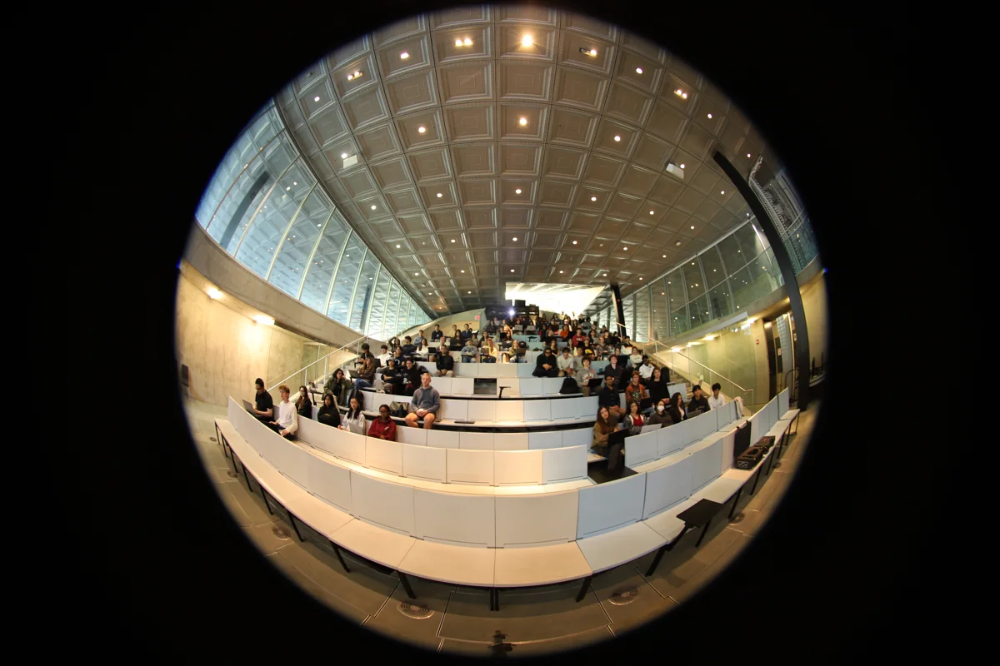
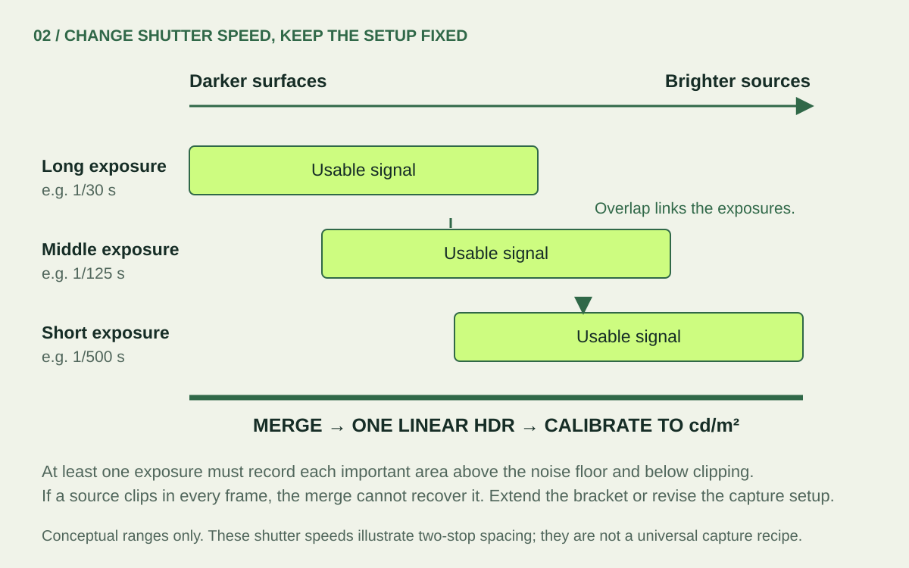
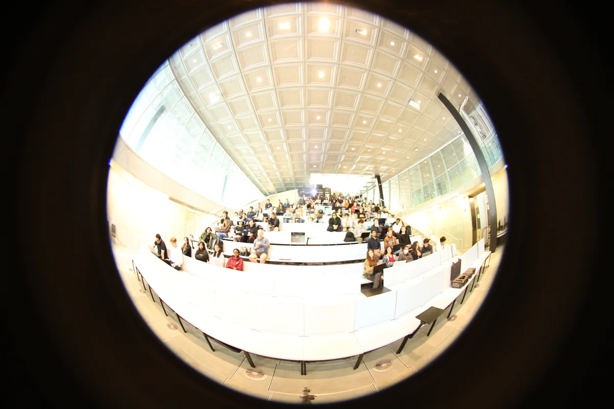
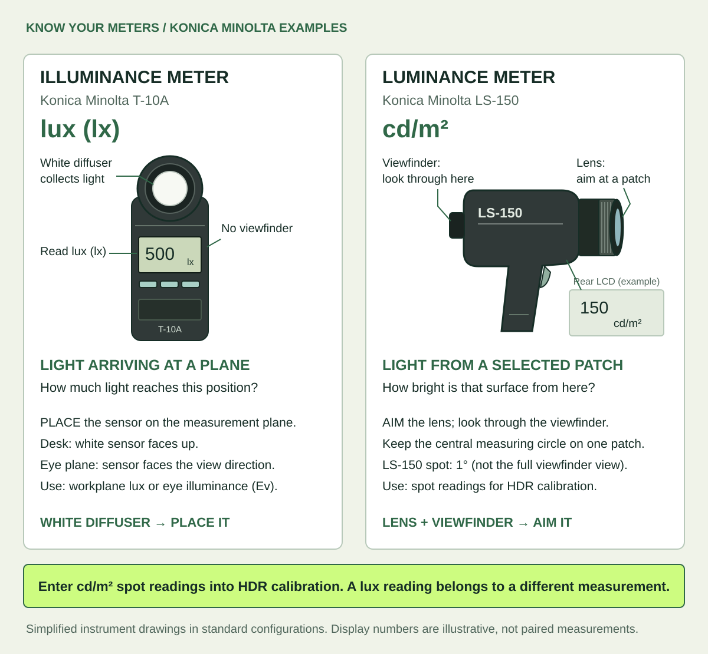
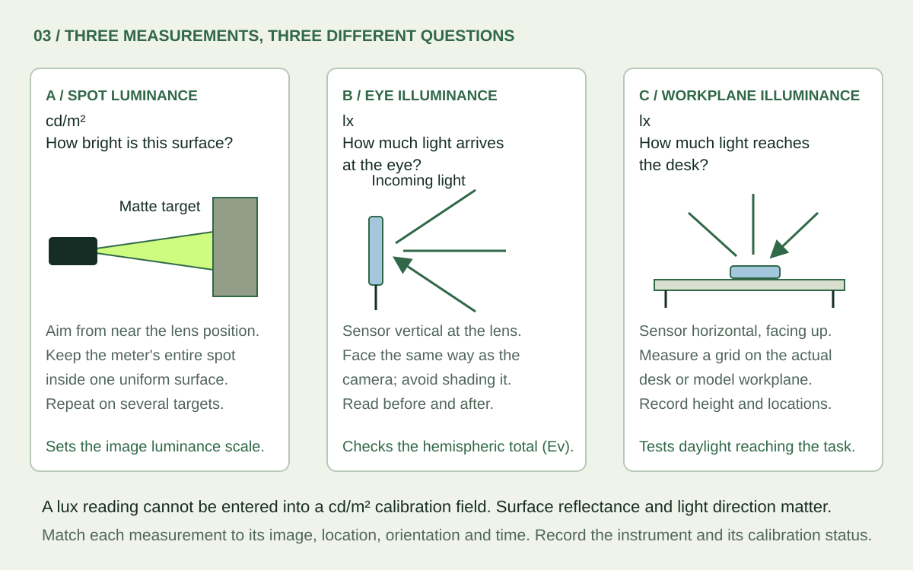
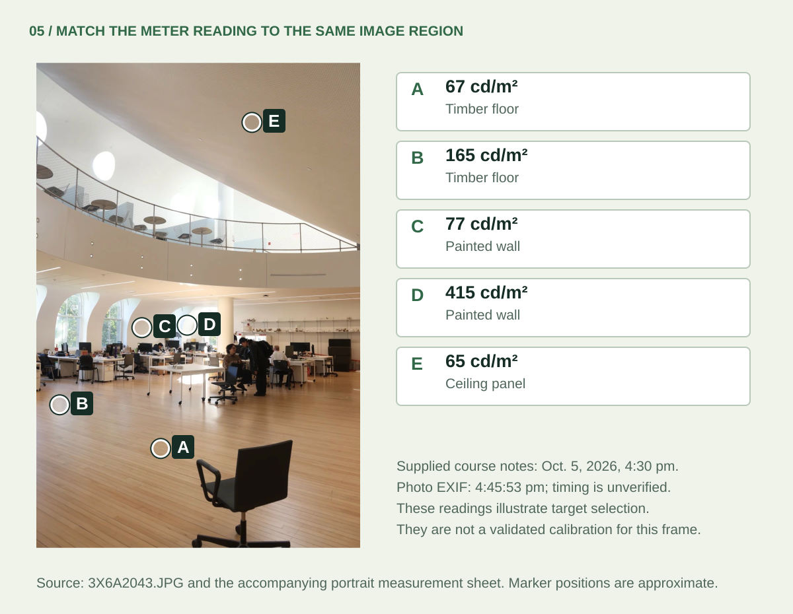
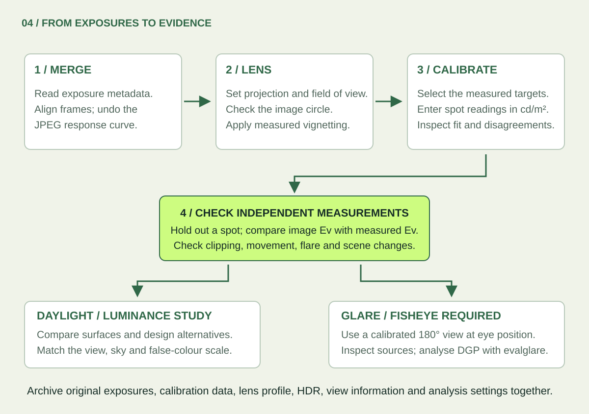

Luminance
Light travelling from a surface or source toward the camera. A spot luminance meter measures one small part of the view; a calibrated HDR records many directions at once.
THE LUMISNAP FIELD GUIDE / ABOUT 20 MINUTES
A practical introduction to HDR photography for architecture students. Learn what to capture, what to measure and what your image can tell you about light.
LumiSnap is used to teach lighting and daylighting in architecture at Cornell University and MIT.
Jump to the field checklist ↓
01 / FIRST PRINCIPLES
Think of a window lighting a desk. Illuminance describes how much light arrives at the desk. Luminance describes how bright the desk, the wall or the window is in a particular direction. A calibrated photograph maps luminance across the view.
Light travelling from a surface or source toward the camera. A spot luminance meter measures one small part of the view; a calibrated HDR records many directions at once.
Light arriving on a plane. A lux meter on a desk faces up. At the eye position it faces forward. The position and orientation are part of the measurement.
A camera sensor has a limited usable range: weak signals disappear into noise, while strong signals saturate, or clip. One photograph may preserve the room but lose the window, or preserve the window but lose the room. A bracket records the same scene at several exposure times. The merge combines the useful parts into a high dynamic range (HDR) image.
A linear HDR preserves ratios: twice the value represents twice the light signal. Calibration gives that signal a physical scale. A screen preview compresses the range to make it visible; a false-colour view assigns colours to numbers. Neither a pleasing preview nor a phone’s ordinary “HDR photo” proves that the data are calibrated. Keep the numerical Radiance HDR as well as any presentation images. [1]
02 / START WITH A QUESTION
Compare light distribution on ceilings, walls and work surfaces, or test a shading or rooflight design. A normal lens can document a selected area. Keep the camera view and false-colour legend consistent between alternatives.
In a physical model, put the lens at the equivalent occupant position. Keep materials, glazing, model scale and sky conditions documented, and avoid blocking openings with the camera. Lux readings on a workplane answer a different question from surface luminances in the image.
The LumiSnap glare workflow requires a fisheye lens and a complete 180° hemispheric view. Put the lens at the observer’s eye position and aim along the intended gaze direction. A narrow image omits light sources and changes their apparent sizes and positions.
A standard iPhone ultra-wide lens is not a 180° fisheye. Phone captures remain useful for luminance studies; use a characterized fisheye setup for the desktop glare workflow. An add-on lens also needs its projection, field of view and vignetting checked.
For a daylight study, DGP (Daylight Glare Probability) helps assess discomfort from the captured view. UGR (Unified Glare Rating) is primarily an electric-lighting metric. Interpret each within its intended application; a single view at one time does not describe a room’s annual daylight performance.
A separately calibrated sky capture can also provide lighting input to a daylight simulation. That is a different capture from an interior view: it needs the sky hemisphere, orientation and a treatment of the sun. An interior photograph alone is not an annual sky model. [5]
03 / THE FIELD SETUP
Bring a tripod, a remote release or timer, a matte neutral target, and a calibrated spot luminance meter. A separate illuminance meter is strongly recommended for validation. For glare, add a fisheye that covers the full forward hemisphere on your camera’s sensor.

| Control | Practical starting point | Why it matters |
|---|---|---|
| Shutter time | Change it for each exposure. | A longer exposure collects more light without changing lens geometry. |
| Aperture / f-number | Fix it for the whole bracket. For an interchangeable-lens camera, f/8 is a starting point to test, not a universal optimum. | Aperture affects depth of field, vignetting and flare. Use corrections measured at the aperture you actually choose. |
| ISO | Use a fixed, low native ISO, often 100, when the setup permits. | ISO changes signal gain; it does not collect more photons. More gain can reduce highlight headroom. |
| Focus & white balance | Focus once and lock it. Use a fixed white balance. | Refocusing and changing colour processing make exposures harder to combine consistently. |
| Image processing | For JPEGs, use consistent settings; disable automatic contrast, HDR, local tone changes and automatic lens corrections. | A global response curve cannot undo changing local edits. Keep JPEG picture settings tied to their response calibration. |
RAW stores sensor data before much of the camera’s picture processing. Bayer sensors sample red, green and blue through a filter mosaic; software reconstructs a colour image. RAW still needs correct black-level, exposure and colour handling, followed by physical validation. JPEG has already been processed and compressed, so its nonlinear brightness response must be accounted for. [1]
On iPhone: LumiSnap manages adaptive Bayer RAW brackets on supported devices and lenses. Most phone lenses have a fixed aperture. Stabilize the phone, keep one supported lens, and inspect the saved coverage view after capture. Export the completed session ZIP to desktop with its saved HDR and measurements. Desktop merges camera JPEG brackets; it does not develop arbitrary camera RAW files.
04 / THE CAPTURE STRATEGY
One exposure stop (1 EV) doubles or halves the collected light. At fixed aperture and ISO, 1/30 s collects about twice as much as 1/60 s. Start with overlapping exposures roughly 1–2 stops apart, then extend the range to suit the scene. The number of frames is a consequence of coverage, not a target.

These are real JPEGs from the project’s example series: Canon EOS 6D Mark II, 8 mm lens, f/4, ISO 200. The 11 frames run from 1.3 s to 1/50 s: about six stops between the endpoints, with uneven spacing. They span about a minute. This is an example to inspect, not a recommended bracket length or a certified measurement.
Use the arrow keys or drag the slider. Compare the front desks with the ceiling lights; also look for people who move between frames.


HDR cannot repair missing measurements. A source clipped in every exposure remains unknown. Direct sun and strong reflections can exceed an ordinary bracket’s range; they can also create flare that spreads light across the image. A characterized neutral-density filter can help capture brighter sources, but changes transmission and colour and needs its own correction. A darker-looking preview does not demonstrate that the sun is measured. [2] [3]
05 / MEASURE WHILE YOU CAPTURE
White diffuser: place it where you want to measure arriving light. The Konica Minolta T-10A is an illuminance meter and reads lux (lx). Lens and viewfinder: aim at the surface you want to measure. The LS-150 is a spot luminance meter and reads cd/m². Its central 1° measuring circle selects a small patch; the larger viewfinder helps you aim.


Measure several matte, evenly lit patches visible in the image, covering darker and brighter surfaces. Aim from near the camera position and record exactly which patch you measured. Avoid glossy surfaces, edges, shadows and clipped areas. A grey card is convenient, but “18% grey” does not specify its luminance: you still need the meter reading.
The target must fill the meter’s acceptance cone. For example, a 1° spot is about 5.2 cm across at 3 m, so use a larger uniform patch. In desktop, choose the matching meter angle; on iPhone, choose an image sampling region contained in the same uniform patch. Take repeat readings and reserve at least one target as an independent check.

Place a cosine-corrected lux sensor at the lens position, vertical and facing along the camera axis for a level view. Measure before and after the bracket without shading it. This records Ev, the illuminance arriving on the eye plane. Compare it with illuminance integrated from the corrected hemispheric HDR. A narrow view misses part of that total. Before/after readings also reveal changing daylight; if conditions change appreciably, repeat the sequence. [2]
For a desk or physical daylight model, place the lux sensor horizontally, facing up, on a documented grid at the intended workplane. This measures light reaching the task. It does not replace a spot luminance reference or a vertical eye-plane reading. There is no universal lux-to-cd/m² conversion: even the ideal diffuse-surface relationship depends on reflectance.
Characterize the camera and lens: JPEG response, usable luminous range, projection, field of view, image circle and vignetting. Vignetting is the lens’s gradual darkening toward the edge. Under stable controlled lighting, a lab can track the same target at different off-axis positions by rotating the camera about the lens’s entrance pupil; the measured fall-off gives a correction for that lens and aperture. Recheck after changing relevant settings, filters or equipment.
For each scene: record the spot readings, before/after Ev, timestamps and view, together with clipping and movement checks. Workplane readings are additional evidence for a daylight study. A global scale factor cannot correct spatially varying lens fall-off, flare or missing highlights. [1] [2] [4]
06 / FROM CAPTURE TO EVIDENCE

| Observation | What to investigate |
|---|---|
| One spot is far from the others | Wrong target, aiming error, glossy material, too-small patch, shadow, movement or changed light. |
| Errors grow near the image edge | Vignetting, an incorrect projection, field of view or image circle. |
| Spot checks agree but image Ev is low | Missing/clipped sources, cropped hemisphere, lens correction, sensor orientation or a time mismatch. |
| Bright halos or duplicate people | Lens flare or motion between exposures. Alignment cannot turn a changing scene into a static measurement. |
For glare: use the calibrated full fisheye at the intended viewpoint, inspect the source-detection image, and compare with evalglare on desktop. Source luminance, angular size, position and eye illuminance all matter. Any replacement of clipped source values is an estimate; preserve its method and measured inputs in the report. [3]
For a design comparison: retain common units and colour limits, matched views, sky conditions and light settings. Save the original bracket, measurement log, lens corrections, calibrated HDR and processing settings. Report the moment and viewpoint the image represents; a false-colour PNG is useful communication, but does not retain the full HDR data.
07 / TAKE THIS INTO THE FIELD
08 / GO DEEPER
This guide translates established HDR measurement methods into a student workflow. The papers provide the experimental methods, limitations and validation detail. Recommendations are starting points to validate with your own equipment.
Made for learning, grounded in research. LumiSnap is created by Timur Dogan, Associate Professor of Architecture at Cornell University and director of the Environmental Systems Lab. His work connects daylighting, building performance simulation and architectural design.
Example photographs and measurement notes come from the supplied LumiSnap course capture series. All explanatory diagrams were drawn for this guide. Download the SVGs to edit shapes, labels and annotations in Illustrator or Inkscape; the example photograph inside the annotated diagram remains a raster image.
READY TO TRY IT?